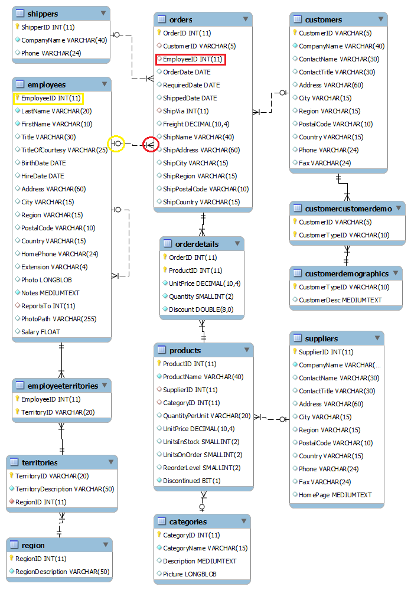

Was ist SQL?
SQL ist eine Datenbanksprache zur Definition von Datenstrukturen in relationalen Datenbanken sowie zum Bearbeiten (Einfügen, Verändern, Löschen) und Abfragen von darauf basierenden Datenbeständen.
Relationale Datenbanken
Eine relationale Datenbank kann man sich als eine Sammlung von Tabellen (den Relationen) vorstellen, in welchen Datensätze abgespeichert sind. Jede Zeile (Tupel) in einer Tabelle ist ein Datensatz (record). Jedes Tupel besteht aus einer Reihe von Attributwerten (Attribute = Eigenschaften), den Spalten der Tabelle.
Modelieren
Ein Datenbank-Modell ist für die Strukturierung einer Datenbank zuständig. Durch diese Strukturierung kann man die Verknüpfungen der Tabellen sowie die Verbindungen zwischen den Daten übersichtlicher darstellen. Um dies tun zu können, werden Tabellen genutzt.Das Endresultat dieses Vorgangs wird "Relationale Datenbank" genannt.
Primary Key
Foreign Key
Normalisieren
Erste Normalform
Die Erste Normalform wird für die Verringerung der Datensätze genutzt. Genauer gesagt: Es dient dazu, mehrere Einträge in einem Datensatz zu entfernen und sie schlussendlich in einen neuen Datensatz zu tun.
Zweite Normalform
Ein Relationstyp (Tabelle) befindet sich genau dann in der zweiten Normalform (2NF), wenn er sich in der ersten Normalform (1NF) befindet und jedes Nichtschlüsselattribut von jedem Schlüsselkandidaten voll funktional abhängig ist.


Dritte Normalform
Die dritte Normalform wird für die Verfeinerung der relationalen Datenbank genutzt. Damit werden die Bezüge der Primary- sowie Foreign-Keys klargestellt und Spalten, welche weiterhin nicht passen, werden in eine eigene Tabelle platziert.


Data Definition Language
Die "Data Definition Language wird verwendet, um die Struktur einer Datenbank aufzubauen und richtig zu definieren". Damit ist das Erstellen,Bearbeiten und weiteres einer Datenbank gemeint.

Datenbank erstellen
Eine Datenbank kann mit dem Befehl "create" erstellt werden. "Database" steht für die Datenbank. Danach folgt noch der Name der Datenbank. Am Schluss schliesst man den Befehl mit einem ";" ab.

Mit "show databases;" können alle Datenbanken angezeigt werden. Dabei wird nur der Name aller Datenbanken ausgegeben. Somit kann man überprüfen, ob die Datenbank erfolgreich und nach der Bedürfniss erstellt wurde.
Tabelle erstellen
Um eine Tabelle erstellen zu können, muss die Datenbank, in welcher dann die Tabelle erstellt werden soll, ausgewählt werden. Mit "use Datenbank-Name;" kann man dies anrichten. Mit dem Befehl "describe" kann der Aufbau einer Tabelle angezeigt werden. Hier können alle Primary Keys, Foreign Keys,Spalten und weiteres aufgerufen werden.
Ändern von Tabellen
Eine Tabelle ändert man mit dem Befehl "alter table". Sobald dies eingegeben wurde, folgen Tabellenname und Funktion danach. Mit "add" kann zum Beispiel ein Datensatz oder eine Spalte hinzugefügt werden. Mit "drop" kann zum Beispiel ein Foreign Key oder ein Primary Key entfernt werden. Mit "change" kann ein/eine Attribut (Spalte) bearbeitet werden.

add & drop
Data Query Language
Die "Data Query Language" wird für den Informationsabruf von Datenbanken genutzt. Hierbei wird grundsätzlich der Befehl "select" verwendet. Danach wird mit "from Tabellenname" gesagt, woher die Daten hergeholt werden sollen. Nachdem folgt je nach Bedarf die Bedingung ("where"),die Gruppierung ("group by") weitere Bedingungen ("having") oder auch noch die Ordnung ("order by").
Ein Attribut aus Tabelle selektieren
Um eine Spalte aus einer Tabelle auslesen zu können, muss der Befehl "select" dafür genutzt werden. Nach "select" kommen die Spalten, welche ausgelesen werden sollen. Als aller letztes gibt man mit "from Tabellenname" den Ort der Spalte an, so weis das System, woher es die Daten holen soll.
Nach Bedingung suchen
Um bestimmte Spalten, welche bestimmte Eigenschaften beinhalten, auszulesen, muss der Befehl "where" verwendet werden. Danach folgt ein Operationszeichen (=,<,>) mit welchem wir die Ausgangslage der Bedingung bestimmen. Nach dem Operationszeichen folgt der Wert der Bedingung. Wenn es um eine Zahl geht, können die Anführungszeichen ("") weggelassen werden. Wenn es aber um Buchstaben geht, müssen diese Anführungszeichen beibehalten werden.
In Tabelle gruppieren
Die Funktion "group by" ist ein wenig komplex anzuwenden. Um sie nutzen zu können, muss eine zusätzliche Funktion genutzt werden.
Beispiel:
Abfrage nach quantity > 70 gruppiert nach "product_id"
select sum(quantity) from inventory_transactions group by product_id having sum(quantity) >= 70;
In Tabelle sortieren
Sortierungen sind für die Übersicht einer Abfrage sehr hilfreich. Zusätzlich können Sortierungen für eine Zeiteinsparung sorgen. Hierfür wird die Funktion "order by" verwendet. Nach "order by" folgt ein "=" Zeichen. Der Wert folgt als aller letztes. Dies ist dann verantwortlich für die Sortierung. Häufig wird nach Werten und Spalten sortiert. Zum einen kann nach Preisen, Zahlen usw. sortiert werden, zum anderen nach Wörtern, wichtigen Kürzeln usw.